Pad Thai
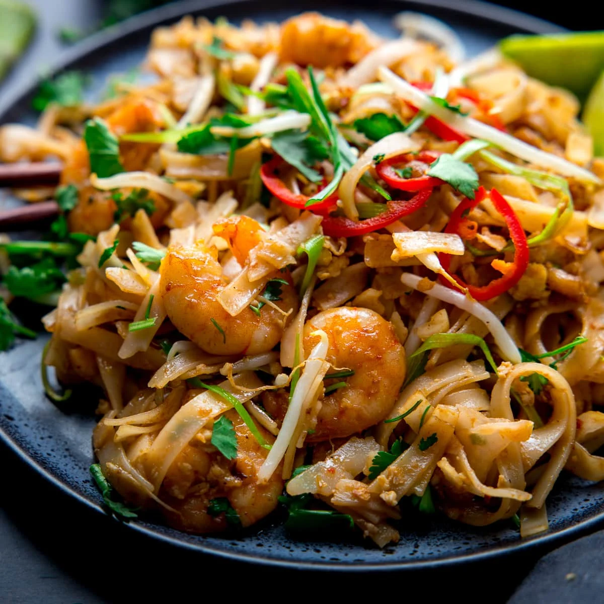
Pad Thai is a popular Thai stir-fried noodle dish. It is made with rice noodles, eggs, tofu, shrimp or chicken, bean sprouts, and various seasonings.
Nasi Lemak

Nasi Lemak is a fragrant rice dish cooked in coconut milk and pandan leaf. It is often served with fried anchovies, peanuts, cucumber, boiled egg, and sambal chili sauce.
Pho
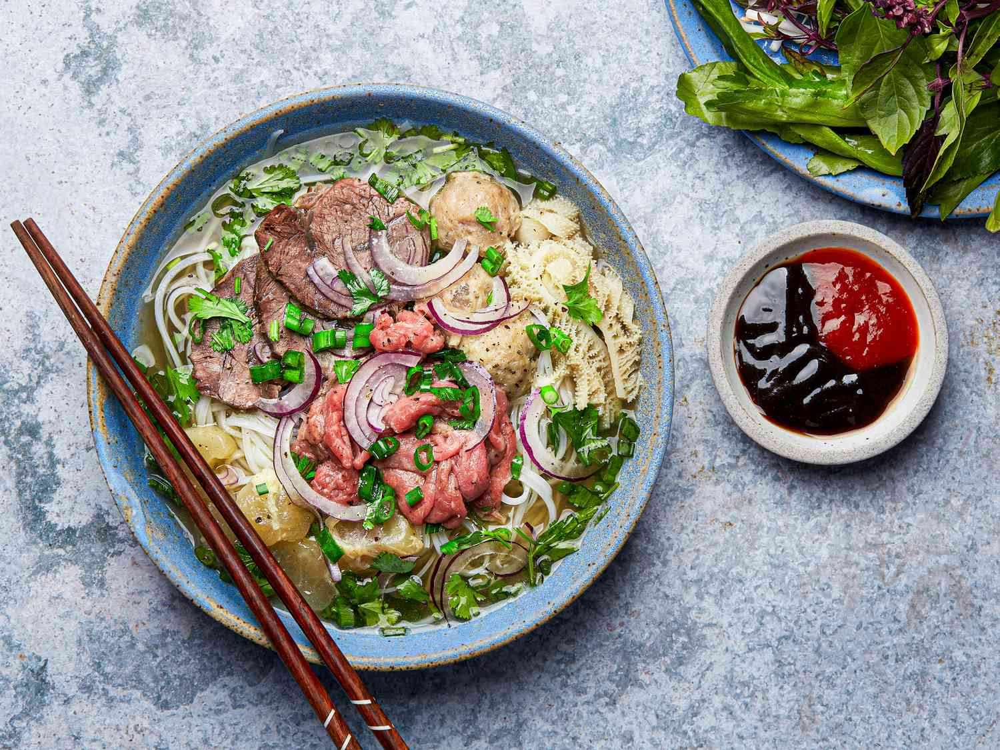
Pho is a Vietnamese noodle soup consisting of broth, rice noodles, and meat (usually beef or chicken). It is often garnished with fresh herbs, bean sprouts, and lime.
Satay
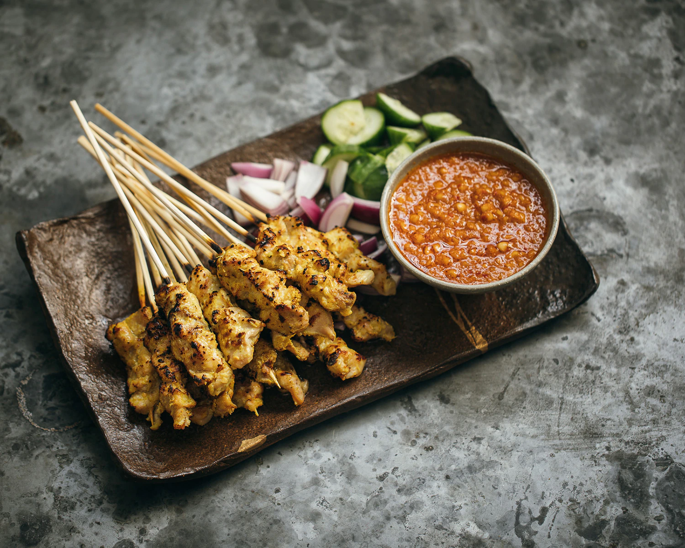
Satay is a popular Indonesian dish made of skewered and grilled meat (usually chicken, beef, or lamb). It is served with a peanut sauce and often accompanied by rice cakes and cucumber.
Tom Yum Soup
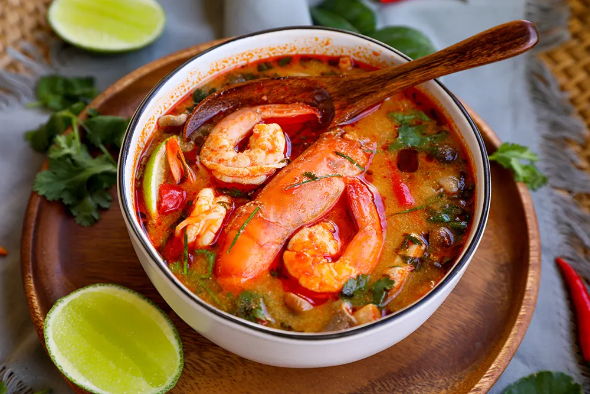
Tom Yum Soup is a spicy and sour soup from Thailand. It is made with lemongrass, kaffir lime leaves, galangal, lime juice, chili, and typically includes shrimp or chicken.
Laksa
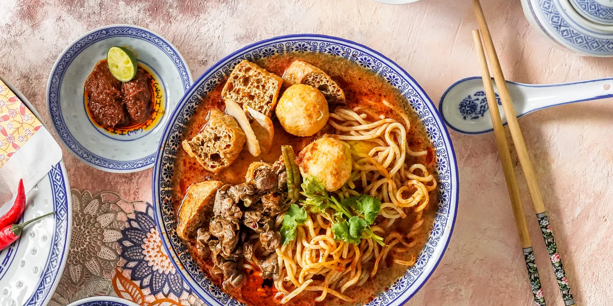
Laksa is a spicy noodle soup commonly found in Malaysia and Singapore. It consists of rice noodles served in a rich and fragrant curry or coconut-based broth, topped with various ingredients like shrimp, chicken, tofu, and bean sprouts.
Banh Mi
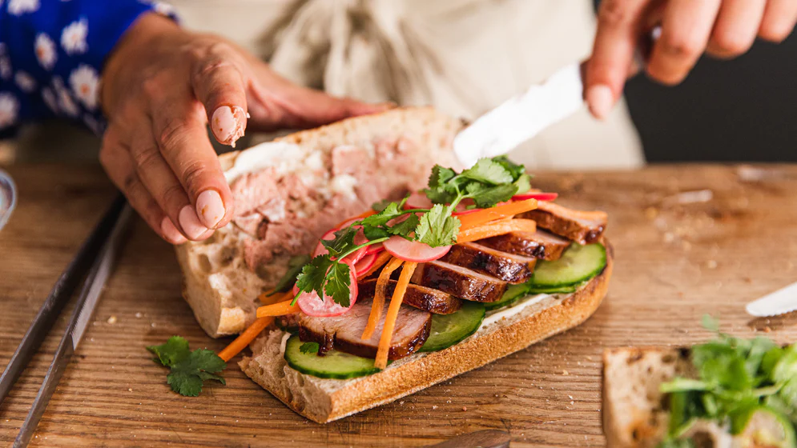
Banh Mi is a Vietnamese sandwich made with a crusty French baguette filled with various ingredients such as grilled pork, pâté, pickled vegetables, cilantro, and chili sauce.
Rendang
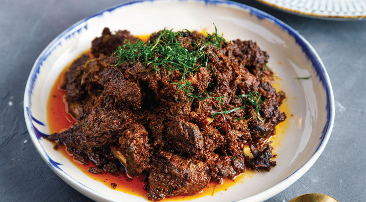
Rendang is a traditional Indonesian dish of slow-cooked meat (usually beef) in a rich and flavorful coconut curry. It is often served with steamed rice.
Mango Sticky Rice
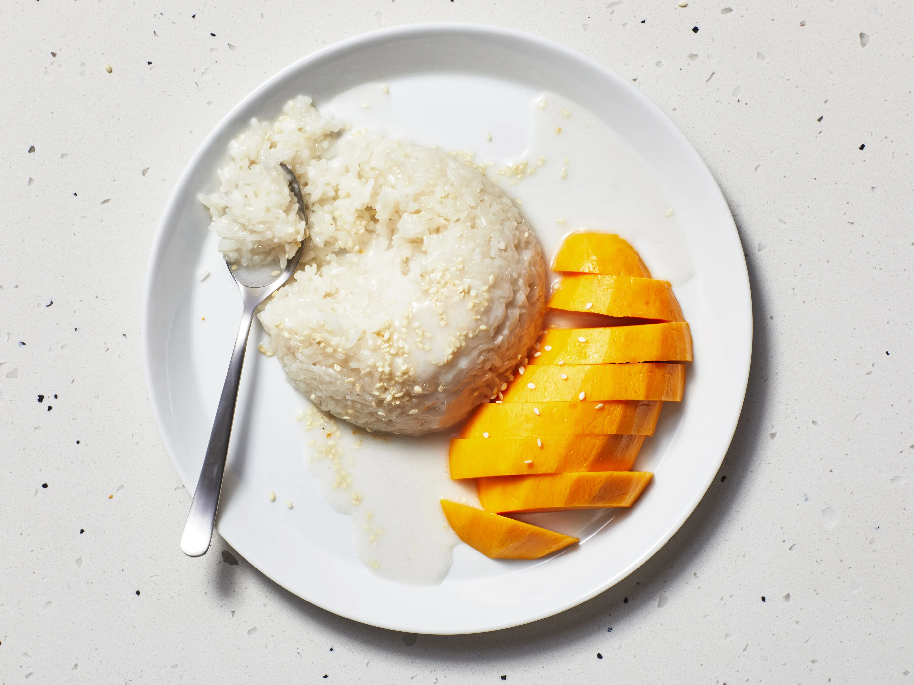
Mango Sticky Rice is a popular Thai dessert made with sweet glutinous rice, fresh mango slices, and a coconut milk sauce. It is a delicious combination of sweet, creamy, and tropical flavors.
Gado-Gado
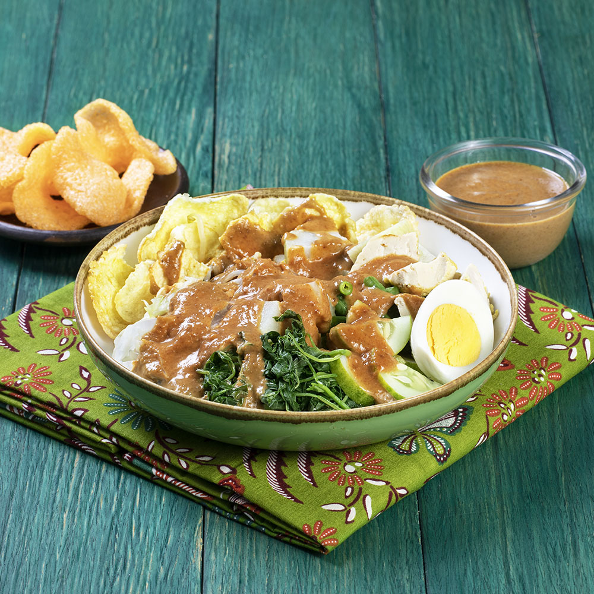
Gado-Gado is an Indonesian salad made with a mix of blanched or steamed vegetables, tofu, and boiled eggs. It is served with a peanut sauce dressing and often enjoyed with prawn crackers.
Adobo
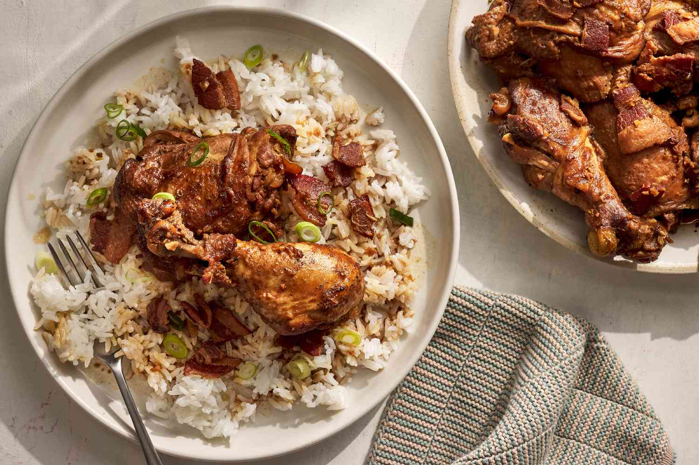
Adobo is a popular Filipino dish made with meat (usually pork or chicken) marinated in vinegar, soy sauce, garlic, and spices, then braised until tender. It is often served with rice.
Rujak
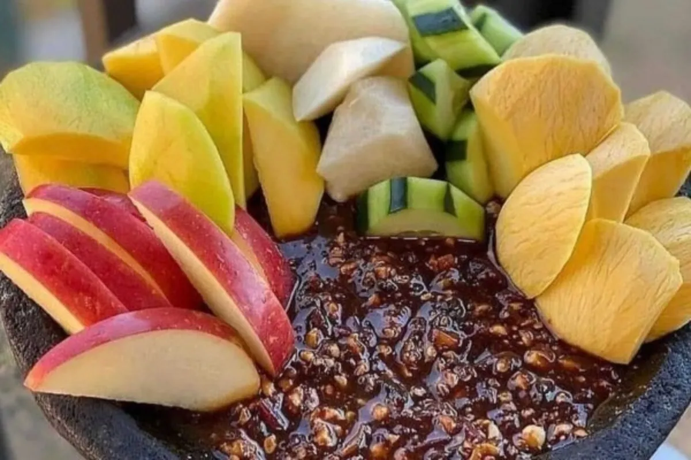
Rojak is a traditional salad dish found in Malaysia, Indonesia, and Singapore. It is a mix of various fruits and vegetables, such as cucumber, pineapple, bean sprouts, and tofu, topped with a spicy and tangy sauce.
Burmese Tea Leaf Salad

Burmese Tea Leaf Salad, also known as "Laphet Thoke," is a popular salad from Myanmar. It is made with fermented tea leaves, mixed with various ingredients like tomatoes, peanuts, fried garlic, and sesame seeds.
Green Curry
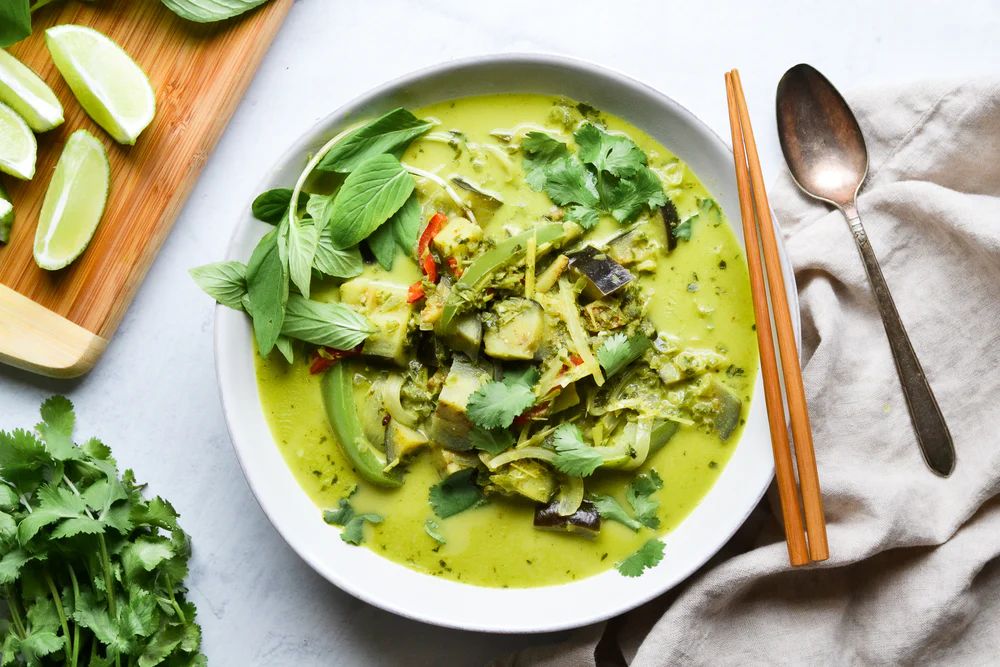
Green Curry, also known as "Gaeng Keow Wan," is a popular Thai curry dish. It is made with a paste of green chili peppers, Thai herbs, and coconut milk, cooked with meat (such as chicken or shrimp) and vegetables.